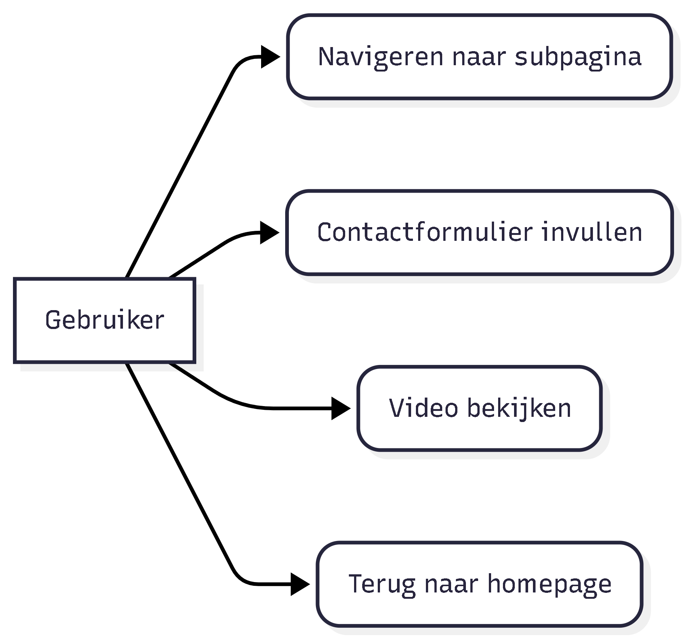
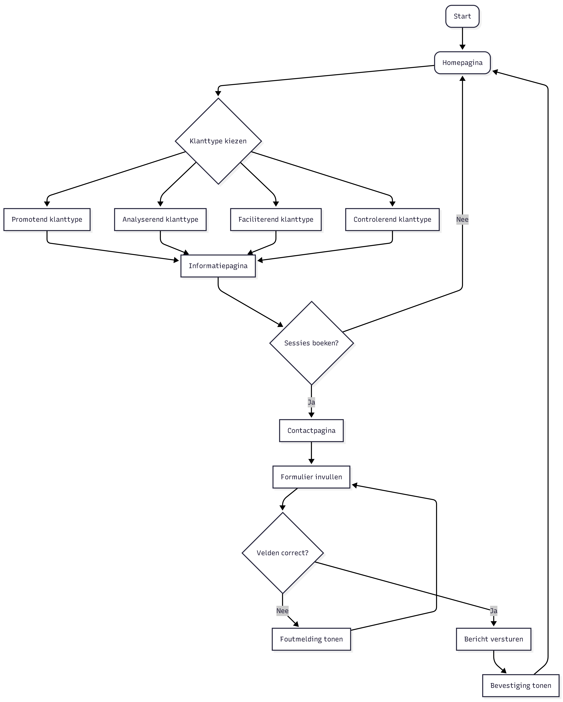
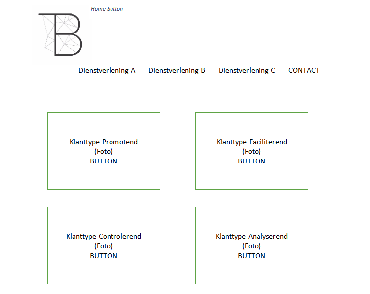
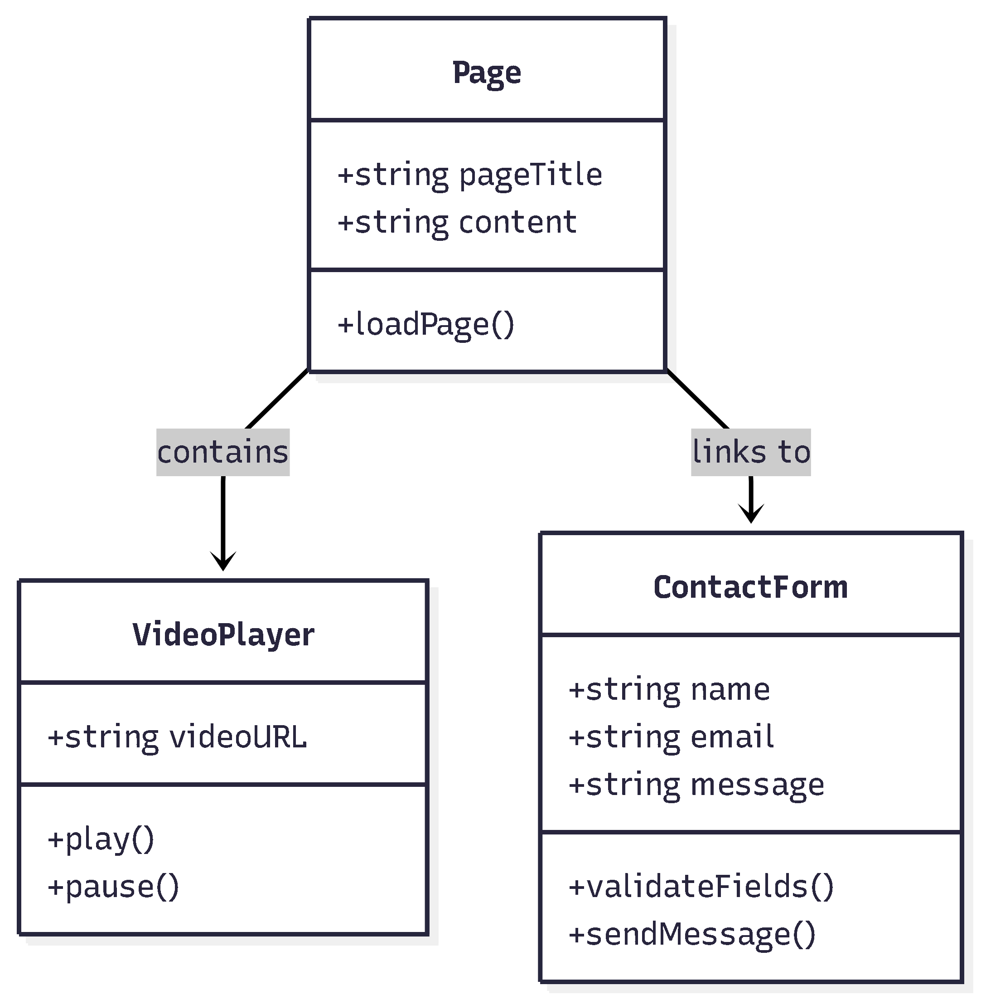

In dit werkproces heb ik het software ontwerp gemaakt voor de website. Hierbij heb ik diagrammen en een technische structuur opgesteld zodat de ontwikkeling gestructureerd kon plaatsvinden.
Voor dit werkproces heb ik verschillende ontwerpdocumenten opgesteld. Ik heb eerst de functionele eisen geanalyseerd en daarna een software ontwerp gemaakt met diagrammen en structuur van de applicatie.
Software developer – verantwoordelijk voor het ontwerp van de softwarearchitectuur en functionaliteiten.



Dit wireframe toont de basisstructuur van de website en helpt bij het bepalen van de layout en navigatie. Dit is het bestand wat wij van de klant hebben ontvangen en waar wij ons ontwerp op hebben gebaseerd.

Het maken van diagrammen hielp om de structuur van de applicatie duidelijk te visualiseren voordat ik begon met programmeren.
Sommige onderdelen van het ontwerp hadden nog gedetailleerder uitgewerkt kunnen worden.
Een goed software ontwerp zorgt ervoor dat de ontwikkeling van een applicatie sneller en overzichtelijker verloopt.
Bij toekomstige projecten wil ik eerst een volledig ontwerp maken voordat ik begin met programmeren.
Het resultaat is een compleet software ontwerp met diagrammen, wireframes en een technische structuur van de applicatie.